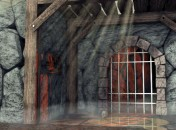
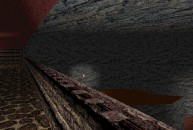
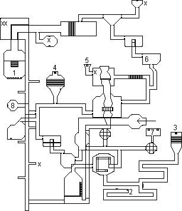

| 1 | Six chests (from left to right). 1:teleport, 2:treasure (contains quest item), 3:teleport, 4:teleport, 5:teleport, 6:teleport |
| 2 | Stone face gives you +10 to luck for the character who touches it. |
| 3 | Switch in stone table |
| 4 | Switch in stone table |
| 5 | Switch in stone table |
| 6 | Locked Door, opened by switch #5 |
| 7 | Secret Door, opened by touching the wall. Contains 2 switches |
| 8 | Secret Room, oppend by using switch from room #4. Here you will find the Orders from the Shadow Guild message scrool which is needed for the [Shadow Guild Proof Quest]. Note that the chest contains a secret. Open it the first time and clean it out. The 2nd time you open it, a new treasure will be inside. |
Leave us a message at mgrounds@hotmail.com